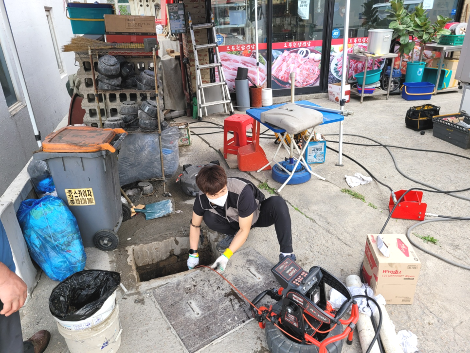
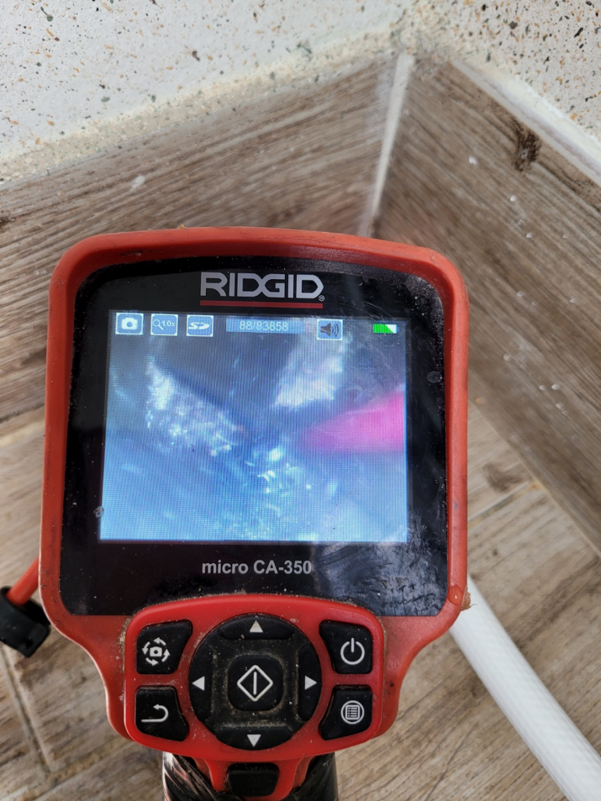
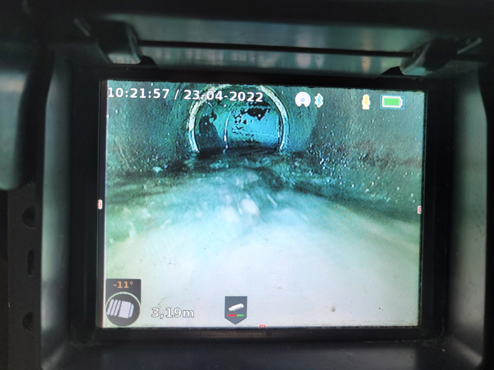
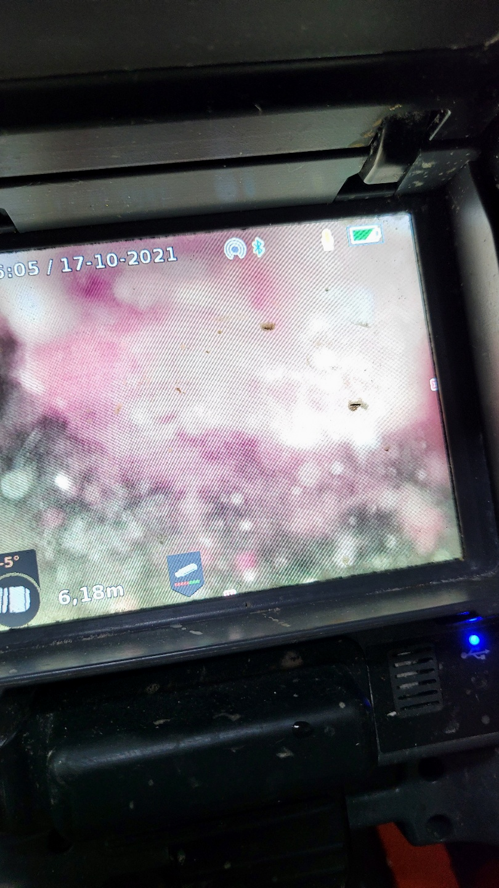
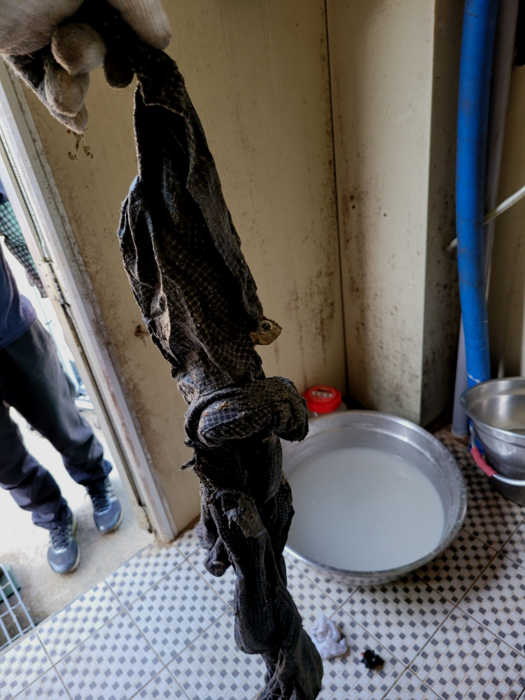
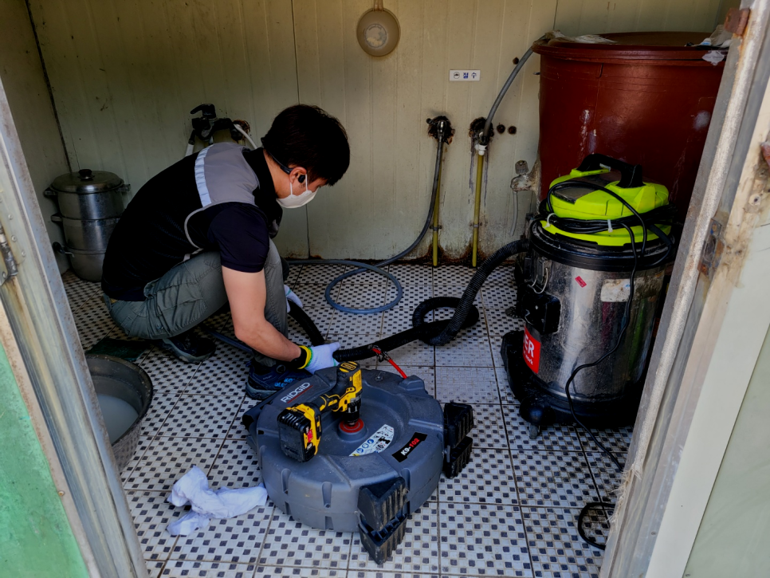

🏠 안산 상록구 일동 세탁실하수구역류 부곡동 배관기름때 고압세척
안산 싱크대막힘 전문 시공 후기

📋 작업 개요
- 위치: 안산
- 서비스 유형: 싱크대막힘, 변기막힘, 하수구막힘, 배관막힘, 역류해결, 뚫는업체, 배관청소, 고압세척, 설비공사
- 작업 일시: 2023. 9. 28. 1:26
- 업체명: 하수구수사대 (010-5615-2118)
🔍 문제 상황
안녕하세요.
설비전문업체 "하수구수사대"를 찾아주셔서 감사합니다.
생활하는데에 없으면 안되는것이 물과 퇴수구인데요, 우리집을 포함해서 상가등등퇴수구가 막히게 되면 여간 답답하지 않을수 없습니다.
조급한 나머지 무조건 행동을 취하고 다양한 업체를 찾아보고 이러다 보면 시간이 더 지연되어 상태가 좋아지기보다 악화되는 경우도 생깁니다.배수 이럴때는 고민만하지 마시고 전문가에게 곧바로 문의하시길 추천드려요.
안산 상록구 일동 세탁실하수구역류 부곡동 배관기름때 고압세척

🔎 원인 분석
💡 전문가 진단: 안산 상록구 일동 세탁실하수구역류 부곡동 배관기름때 고압세척
작업 의뢰 시 AS가 되는 업체인지 미리 알아 보는 것도 하수업체를 고를때 좋은 팁이며 방문하는 업체를 자세히 확인하다보면 꼭 필요한 장비임에도 불구하고 없는 곳도 많기 때문에 최신장비가 보유 유무도 알면 좋습니다.
배수 뚫기 위해 내시경을 투입해서 보니 엮인 배관으로 이어진 곳에 침전물들이 누적되어 있는 것을 확인시켜드렸어요. 통로 깊숙이 들어가 있기에 막인 것을 알아차리는데 꽤나 어려움이 있었을 듯해요.
믿고 부른 배수구업체가 제대로 뚫었다면서 철수했는데 얼마 지나지 않아서 똑같은 증상이 재발했다는 경우도 어렵지 않게 봅니다. 양심적인 업체였다면 이럴 때 당연히 다시 가서 뚫어주어야만 하는 것입니다.
다세대 주택에서는 여러 세대의 사람들이 한 배관을 이용하는 곳인 만큼 불편함을 줄이기 위해서 배출구문제를 빠른 해결을 하고자 현장으로 즉시 출동을 하였습니다. 이번 현장을 통해서 배관 막힘을 전문 업체에서는 어떻게 해결을 하게 되었는지를 알려드리도록 하겠습니다.
고체 물질은 오히려 보이지 않는 배출구 안으로 들어가면서 심하게 막히게 되는 경우가 있습니다. 이때는 배출구 배관을 들어내는 큰 공사까지 해야 할 수도 있기 때문에 혼자서 해결을 하지 마시고 전문 업체를 통해서 진행을 하시는 것이 더욱 시간이나 비용적으로도 합리적으로 처리할 수 있습니다.

🔧 작업 과정
배수구뚫는 작업을 반복하면서 기름 슬러지를 말끔히 제거를 하면서 석션을 해주니 덩어리지거나 굳어서 고정된 오물들이 정말 많이 배출되었는데요. 배수구 내부에는 마지막으로 배관 내시경을 통해서 다시 한번 전체적인 검수를 진행하였습니다.
당장 화장실을 이용을 못하다 보니 무척 불편하신 상황이라고 급히 연락을 주셨는데요.퇴수막힘 빠른 해결을 하기 위해서 저희는 우선 작업 진행과정을 말씀드린 후에 본격적인 작업으로 들어갔습니다.
배수막힌배관을 뚫을려할때 사용되는최첨단장비로는 빨아드리거나 샤프트를 이용하고 막힌곳에따라 적절한기계를 쓰고있답니다. 무슨상태이든지 그에맞는전문장비들이 갖춰져있어서 우려하시지 않아도되는데요.
견적비용을 솔직하게 말할수있는전문업체들을 찾아야하는데요.합리적인비용을 알려드리기에 생기게되는무조건 배출구 뚫을수있다는생각과 긍지를가지고 제대로된해결법을 얻을거에요
경력없는사람이아닌 일정수준의 경력이있는사람들로만 뭉쳐있으며 같은기술력과 퇴수기사님들은 출중한기술로 문의가오자마자 60분안에 도착보장해드리고있답니다.
퇴수구 안에 누적된 침전물들은 자연스럽게 사라지는게아니고 계속쌓이다가 크기가부풀면서 엄청난일이 일어나게되는데요.
퇴수구수리비용에관해서 알려드려보자면 말도없이 믿기힘든돈을 요구하고있지 않습니다.기본적인비용이 들때는 의뢰하실때 알려드리고 있습니다만 통화로는 힘들면 내방을무료로하고 견적을알려 드리고있어요.
변기 쪽에 물을 내려보니 좌변기 및 소변기는 물이 시원하게 내려가고 있는 상태였고, 단순히 바닥 배수구 배관 쪽만 막힌 느낌이었지만 일단 상황을 살펴보아야 하는 상태였습니다.


✅ 작업 완료
제아무리 좋은 장비를 갖췄더라도 노하우 없이는 말짱 도루묵입니다. 초심자는 심도 있는 일을 할 때 분명 한계점에 도달하여 이따금씩 포기하기도 합니다.
#하수구막힘 #하수구뚫음 #하수구역류 #씽크대막힘 #싱크대역류 #오수관막힘 #하수구청소 #욕실하수구막힘 #변기막힘 #하수구뚫는비용 #싱크대수리 #화장실막힘




⚠️ 주방 싱크대 배관 막힘 예방 수칙
- ✅ 기름기가 묻은 식기나 프라이팬은 설거지 전 키친타올로 반드시 기름때를 닦아내세요.
- ✅ 주기적으로 싱크대 개수대에 뜨거운 물을 가득 받아 한 번에 내려 배관 내부 기름을 씻어내세요.
- ✅ 배수구 거름망을 미세한 필터로 사용하시고 음식물 찌꺼기가 틈으로 새어 들지 않게 관리하세요.
- ✅ 베이킹소다와 식초를 뜨거운 물과 함께 일주일에 한 번씩 부어주면 배관 살균과 막힘 예방에 좋습니다.
💡 핵심 정리
- 확실한 장비 작업(내시경 점검 및 샤프트 스케일링)으로 원인을 뿌리 뽑습니다.
- 작업 후 1년 이내에 동일한 부위 재발 시 100% 무상 A/S 서비스를 보장합니다.
- 서울 · 경기 · 인천 전 지역에 24시간 언제든 긴급 출동할 수 있도록 항시 대기 중입니다.
❓ 자주 묻는 질문 (FAQ)
🚨 안산 싱크대막힘 문제로 고민이신가요?
정확한 원인 진단과 확실한 시공으로 재발 없는 해결을 약속드립니다.
24시간 긴급 출동 | 서울 · 경기 · 인천 전지역 | 1년 내 재발 시 무상 A/S